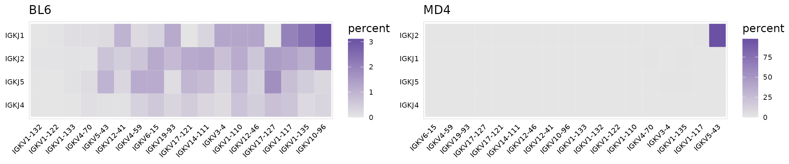

For this vignette we are using AVID-seq data. This is a method developed by the Hesselberth lab which involves staining cells with DNA-tagged antigen. The DNA tag is similar to the tags present on CITE-seq antibodies and can be detected using the 10x Genomics 5’ immune profiling kit. For this experiment we mixed splenocytes from BL6 and MD4 mice and stained with a HEL-DNA conjugate. MD4 B cells are monoclonal and specifically bind HEL.
Import VDJ data
import_vdj() takes the output files from Cell Ranger and adds clonotype information to the meta.data for an existing Seurat object. For cells with multiple chains, the information for each chain is stored as a single row, separated by a ‘;’ (or a character specified by sep). For cells that do not have any VDJ sequencing data, NAs will be added to the meta.data.
If the Seurat object contains data for multiple runs, a vector containing paths to the VDJ data for each sample can be given. If multiple paths are provided, cell prefixes should be included as names for the vector.
# Create vector of paths pointing to cellranger output
paths <- here("data/avid/bcr")
so_avid <- import_vdj(
sobj_in = so_avid, # Seurat object
vdj_dir = paths, # cellranger directories
filter_contigs = TRUE # Only include productive chains
)Take a look at the meta.data to see the V(D)J data added to the object.
vdj_cols <- c(
"clonotype_id", "cdr3",
"chains", "v_gene",
"j_gene", "reads",
"umis"
)
so_avid@meta.data %>%
as_tibble() %>%
filter(!is.na(clonotype_id)) %>%
select(all_of(vdj_cols))
#> # A tibble: 3,820 × 7
#> clonotype_id cdr3 chains v_gene j_gene reads umis
#> <chr> <chr> <chr> <chr> <chr> <chr> <chr>
#> 1 clonotype91 CVKGYDYDWYFDVW;… IGH;IGK IGHV10-3;IG… IGHJ1;IGK… 464;540 9;10
#> 2 clonotype92 CARGRLGYAMDYW;C… IGH;IGK IGHV1-53;IG… IGHJ4;IGK… 246;22… 4;38
#> 3 clonotype94 CTVSYTKDWYFDVW;… IGH;IGK IGHV1-5;IGK… IGHJ1;IGK… 282;13… 5;22
#> 4 clonotype95 CARSYDYDPLYYAMD… IGH;IGK IGHV1-72;IG… IGHJ4;IGK… 150;468 4;8
#> 5 clonotype96 CARSRLAYW;CLQYA… IGH;IGK IGHV1-54;IG… IGHJ3;IGK… 578;20… 11;31
#> 6 clonotype97 CAKRGYSNSLDYW;C… IGH;IGK… IGHV2-3;IGK… IGHJ2;IGK… 658;19… 18;31…
#> 7 clonotype17 CQQWSSNPLTF IGK IGKV4-72 IGKJ5 662 13
#> 8 clonotype98 CANPITTAEGWYFDV… IGH;IGK IGHV1-81;IG… IGHJ1;IGK… 962;52… 20;88
#> 9 clonotype99 CARSYGYAMDYW;CW… IGH;IGK IGHV1-80;IG… IGHJ4;IGK… 256;12… 6;21
#> 10 clonotype100 CARWVYGSAWFAYW;… IGH;IGK IGHV1-82;IG… IGHJ3;IGK… 598;12… 19;22
#> # … with 3,810 more rowsQuality Control
Read Support
The read support for each chain can be visualized with the plot_reads() function. This will create plots summarizing the number of UMIs and total reads that were obtained for each chain.
plot_reads(
sobj_in = so_avid, # Seurat object
chain_col = "chains", # Column containing chains for each cell
plot_colors = vdj_colors
) +
guides(fill = FALSE, color = FALSE)
Paired Chains
The djvdj package provides several functions that can be used to manipulate the object meta.data. This includes a function to modify meta.data columns (mutate_vdj()) and a function to filter cells from the object (filter_vdj()). Since cells can have multiple values present in each V(D)J column, when using these functions each string of values for a cell should be thought of as a vector.
The V(D)J data imported from Cell Ranger may include clonotypes that do not have paired heavy and light chains. Using the mutate_vdj() function, we can add a new column (uniq_chains) to the meta.data to shows the unique chains detected in each cell.
so_avid <- mutate_vdj(
sobj_in = so_avid, # Seurat object
uniq_chains = str_c(unique(chains), collapse = "_") # New column
)
# Take a look at the meta.data
so_avid@meta.data %>%
as_tibble() %>%
filter(!is.na(clonotype_id), n_chains > 2) %>%
select(all_of(vdj_cols), uniq_chains)
#> # A tibble: 526 × 8
#> clonotype_id cdr3 chains v_gene j_gene reads umis uniq_chains
#> <chr> <chr> <chr> <chr> <chr> <chr> <chr> <chr>
#> 1 clonotype97 CAKRGYSNSL… IGH;IG… IGHV2-3;I… IGHJ2;I… 658;1… 18;3… IGH_IGK_IGL
#> 2 clonotype109 CTTWLRLRSF… IGH;IG… IGHV14-1;… IGHJ3;I… 400;5… 9;10… IGH_IGK
#> 3 clonotype126 CAKPRYYYGS… IGH;IG… IGHV2-3;I… IGHJ4;I… 764;8… 16;1… IGH_IGK
#> 4 clonotype135 CARGPYYTNG… IGH;IG… IGHV9-3;I… IGHJ4;I… 932;2… 19;3… IGH_IGK
#> 5 clonotype151 CARSYPYFDY… IGH;IG… IGHV1-19;… IGHJ2;I… 260;1… 6;4;… IGH_IGK
#> 6 clonotype152 CALDSSGFAY… IGH;IG… IGHV1-26;… IGHJ3;I… 348;3… 11;4… IGH_IGK
#> 7 clonotype153 CARHDGLPGA… IGH;IG… IGHV1-71;… IGHJ4;I… 558;2… 12;6… IGH_IGK
#> 8 clonotype154 CARDGSSPFD… IGH;IG… IGHV1-82;… IGHJ2;I… 400;3… 9;7;… IGH_IGK
#> 9 clonotype165 CTSPPYEGYY… IGH;IG… IGHV14-4;… IGHJ4;I… 130;4… 4;6;… IGH_IGK
#> 10 clonotype167 CTRLLTGYYF… IGH;IG… IGHV1-15;… IGHJ2;I… 522;6… 10;1… IGH_IGK
#> # … with 516 more rowsFor row 2 shown above, this is equivalent to:
We can then overlay the new labels present in the uniq_chains column on a UMAP projection. djvdj also provides a simple wrapper function (plot_cell_count()) that will summarize the fraction of cells that belong to each group.
chain_cols <- vdj_colors
names(chain_cols) <- unique(so_avid$uniq_chains)
# Chains UMAP
chain_umap <- so_avid %>%
DimPlot(
group.by = "uniq_chains",
cols = chain_cols,
na.value = "grey90"
) +
theme_nothing() +
theme(legend.position = "top")
# Chains bar graphs
chain_bars <- so_avid %>%
plot_cell_count(
x = "type", # Cell labels to plot
fill_col = "uniq_chains", # Cell labels to color each bar
plot_colors = chain_cols,
n_label = FALSE
) +
theme(
plot.margin = unit(c(120, 10, 10, 10), "pt"),
legend.position = "none"
)
# Final figure
plot_grid(
chain_umap, chain_bars,
rel_widths = c(1, 0.55),
nrow = 1
)
The filter_vdj() function can be used to remove V(D)J data for cells that lack paired chains. Setting filter_cells to FALSE (the default) will keep all cells in the object, but the V(D)J information will be removed.
so_filt <- filter_vdj(
sobj_in = so_avid, # Seurat object
filt = "IGH" %in% chains && any(chains %in% c("IGK", "IGL")), # Condition for filtering
filter_cells = FALSE # Should cells be removed
)Clonotype Abundance
To identify the top clonotypes in each sample or cluster, clonotype abundance can be calculated using the calc_abundance() function. These calculations can be performed on a per-cluster or per-sample basis by also providing a meta.data column containing cell labels.
so_avid <- calc_abundance(
sobj_in = so_avid, # Seurat object
cluster_col = "mouse" # meta.data column for grouping
)For each ‘calc’ function provided by djvdj, there is a matching ‘plot’ function that will generate a summary plot. The plot_abundance() function will plot clonotypes ranked by abundance. As expected we see that most MD4 B cells share the same clonotype ID.
plot_abundance(
sobj_in = so_avid, # Seurat object
cluster_col = "mouse", # meta.data column for grouping
label_col = "clonotype_id", # meta.data column containing labels
n_clonotypes = 12, # Number of top clonotypes
plot_colors = m_cols
) +
theme(legend.position = "none")
Repertoire Diversity
The function calc_diversity() will calculate repertoire diversity on number of cells that share each clonotype. Using the cluster_col argument, any meta.data column containing cell labels can be used for calculations. calc_diversity() uses the R package abdiv for performing diversity calculations and any abdiv diversity function can be specified using the method argument. It is important to read the abdiv documentation to ensure the selected function is appropriate for your analysis.
Possible methods for calculating diversity include:
[1] "berger_parker_d" "brillouin_d" "dominance" "heip_e"
[5] "invsimpson" "kempton_taylor_q" "margalef" "mcintosh_d"
[9] "mcintosh_e" "menhinick" "pielou_e" "richness"
[13] "shannon" "simpson" "simpson_e" "strong" In this example we are calculating the Shannon diversity for each sample in the orig.ident meta.data column.
so_avid <- calc_diversity(
sobj_in = so_avid, # Seurat object
cluster_col = "mouse", # meta.data column for grouping
method = abdiv::shannon # abdiv method to use
)The plot_diversity() function will create plots summarizing repertoire diversity for each sample. A named list of functions to run can also be passed to plot multiple metrics. Two different metrics are shown in the example below. As expected, BL6 B cells have a very diverse repertoire, while MD4 cells show low diversity values.
# Metrics to plot
fns <- list(
"simpson" = abdiv::simpson,
"mcintosh" = abdiv::mcintosh_d
)
plot_diversity(
sobj_in = so_avid, # Seurat object
cluster_col = "mouse", # meta.data column for grouping
method = fns, # abdiv method to use
plot_colors = vdj_colors
) +
theme(axis.text.x = element_text(angle = 45, hjust = 1))
Repertoire Overlap
To compare repertoires for different samples or clusters, calc_similarity() can calculate a variety of different similarity metrics. The cluster_col should be used to specify the meta.data column containing cell labels for comparison. Like calc_diversity(), an abdiv function can be specified with the method argument. It is important to read the abdiv documentation to ensure the selected function is appropriate for your analysis.
Possible methods for calculating repertoire similarity include:
[1] "binomial_deviance" "bray_curtis"
[3] "bray_curtis_balanced" "bray_curtis_gradient"
[5] "canberra" "chebyshev"
[7] "chord" "clark_coefficient_of_divergence"
[9] "correlation_distance" "cosine_distance"
[11] "cy_dissimilarity" "euclidean"
[13] "geodesic_metric" "hamming"
[15] "hellinger" "horn_morisita"
[17] "jaccard" "jaccard_nestedness"
[19] "jaccard_turnover" "kulczynski_first"
[21] "kulczynski_second" "kullback_leibler_divergence"
[23] "manhattan" "mean_character_difference"
[25] "minkowski" "modified_mean_character_difference"
[27] "morisita" "rms_distance"
[29] "rogers_tanimoto" "russel_rao"
[31] "ruzicka" "ruzicka_balanced"
[33] "ruzicka_gradient" "sokal_michener"
[35] "sokal_sneath" "sorenson"
[37] "sorenson_nestedness" "sorenson_turnover"
[39] "weighted_kulczynski_second" "yule_dissimilarity" By default calc_similarity() will add a new meta.data column for each comparison. In this example we are calculating the jaccard dissimilarity index for all combinations of clusters present in the seurat_clusters column.
so_avid <- calc_similarity(
sobj_in = so_avid, # Seurat object
cluster_col = "seurat_clusters", # meta.data column for grouping
method = abdiv::jaccard # abdiv method to use
)A heatmap summarizing the results can be generated using the plot_similarity() function. Values closer to 1 indicate the repertoires are very different.
plot_similarity(
sobj_in = so_avid, # Seurat object
cluster_col = "seurat_clusters", # meta.data column for grouping
method = abdiv::jaccard, # Method to use
plot_colors = "#009E73",
size = 0.2, # Additional ggplot options
color = "white" # Additional ggplot options
) +
theme(
legend.text = element_text(size = 8),
axis.text.x = element_text(angle = 0)
)
Gene Usage
The V(D)J data imported from Cell Ranger also includes the specific genes detected for each cell. The function calc_usage() can be used to calculate the fraction of cells that express different V(D)J genes. This function will produce a table summarizing the results. To only include results for a certain chain, the chain and chain_col arguments can be used to specify the meta.data column containing the chains for each cell. By default the results for all chains will be included.
In this example we are summarizing the usage of different V genes for the TRB chain
calc_usage(
sobj_in = so_avid, # Seurat object
gene_cols = "v_gene", # meta.data column containing genes
cluster_col = "mouse", # meta.data column for grouping
chain = "IGH", # Chain to use for filtering genes
chain_col = "chains" # meta.data column containing chains
)
#> # A tibble: 192 × 5
#> v_gene mouse n_cells freq pct
#> <chr> <chr> <dbl> <int> <dbl>
#> 1 IGHV1-11 BL6 3694 2 0.0541
#> 2 IGHV1-11 MD4 126 0 0
#> 3 IGHV1-12 BL6 3694 27 0.731
#> 4 IGHV1-12 MD4 126 0 0
#> 5 IGHV1-15 BL6 3694 75 2.03
#> 6 IGHV1-15 MD4 126 0 0
#> 7 IGHV1-18 BL6 3694 82 2.22
#> 8 IGHV1-18 MD4 126 0 0
#> 9 IGHV1-19 BL6 3694 59 1.60
#> 10 IGHV1-19 MD4 126 0 0
#> # … with 182 more rowsThe function plot_usage() can be used to summarize these results. Using the yaxis argument, the percent or absolute count (frequency) can be used for plotting. The genes plotted can also be selected using the plot_genes argument, or the number of top genes (most frequent) to plot can be specified with n_genes.
plot_usage(
sobj_in = so_avid, # Seurat object
gene_cols = "v_gene", # meta.data column(s) containing genes
type = "bar", # Type of plot
chain = "IGH", # Chain to use for filtering genes
plot_genes = NULL, # A list of genes to plot
n_genes = 50, # The number of top genes to plot
plot_colors = "#0072B2"
)
By passing multiple columns to gene_cols, the frequency that different genes are used together can also be summarized.
calc_usage(
sobj_in = so_avid, # Seurat object
gene_cols = c("v_gene", "j_gene"), # meta.data column(s) containing genes
cluster_col = "mouse", # meta.data column for grouping
chain = "IGK" # Chain to use for filtering genes
)When multiple gene columns are passed to plot_usage(), a list of plots will be returned, one for each cell label in the cluster_col column.
ggs <- plot_usage(
sobj_in = so_avid, # Seurat object
gene_cols = c("v_gene", "j_gene"), # meta.data column(s) containing genes
cluster_col = "mouse", # meta.data column for grouping
chain = "IGK", # Chain to use for filtering genes
plot_colors = "#6A51A3",
n_genes = 20
) %>%
imap(~ .x + ggtitle(.y))
plot_grid(plotlist = ggs)
CDR3 Usage
The calc_usage() and plot_usage() functions can also be used to calculate the fraction of cells that have a certain CDR3 sequence. To do this, the meta.data column containing the CDR3 sequences for each cell can be passed to the gene_cols argument. The plot can be divided into facets based on sample using simple ggplot2 commands.
plot_usage(
sobj_in = so_avid,
gene_cols = "cdr3", # Column containing CDR3 sequences
cluster_col = "mouse",
type = "bar",
chain = "IGK",
plot_colors = vdj_colors,
n_genes = 12 # Number of CDR3 sequences to plot
) +
facet_wrap(~ mouse, nrow = 1, scales = "free_x") +
theme(legend.position = "none")